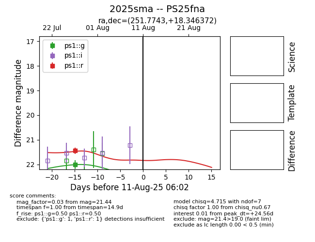

Target 2025sma at 2025-08-11 06:26, see:
TNS: wis-tns.org/object/2025sma
YSE: ziggy.ucolick.org/yse/transient_detail/2025sma
alt names
2025sma (yse,tns)
PS25fna (panstarrs)
coordinates:
equatorial (ra, dec) = (251.7743,+18.34637)
galactic (l, b) = (36.9199,+35.42806)
photometry
last ps1::g=22.00, ps1::r=21.44
1 ps1::g, 1 ps1::r detections
